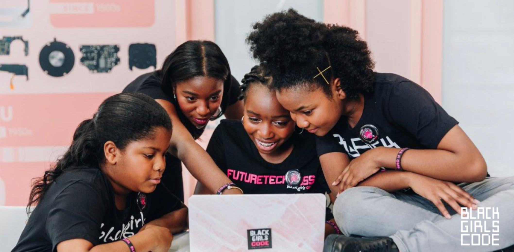
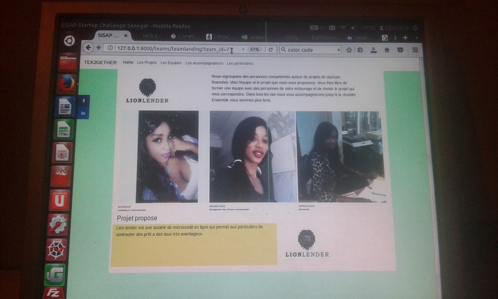
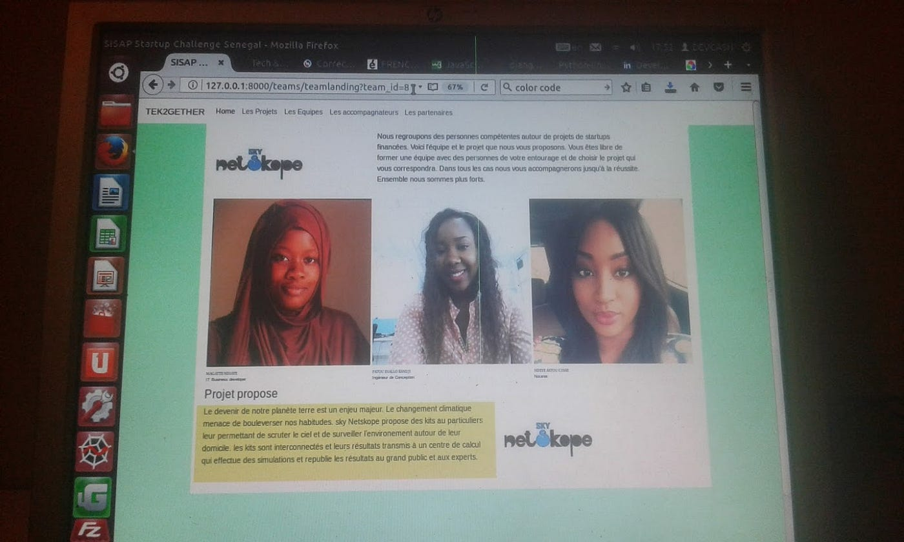
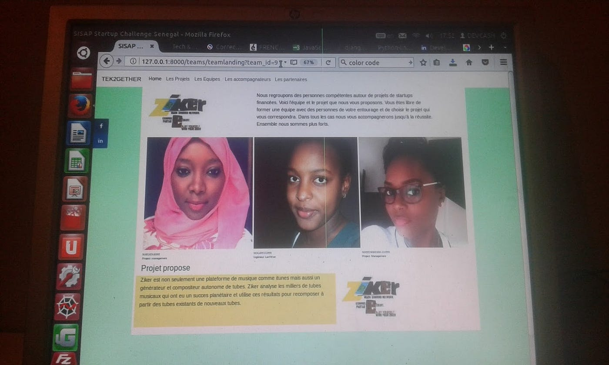
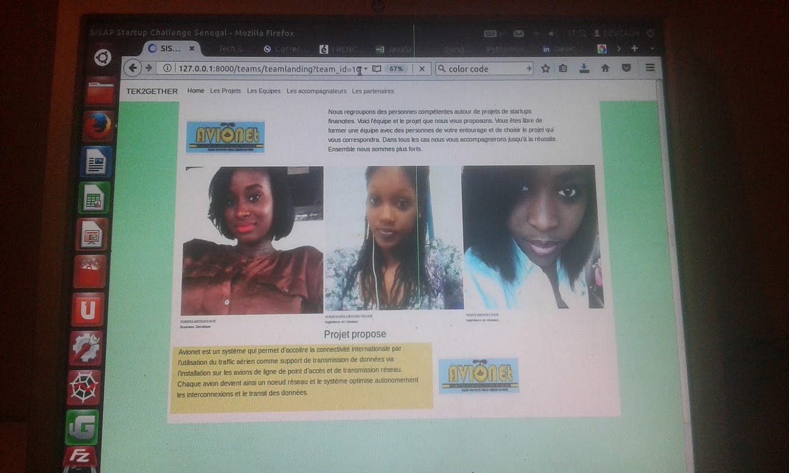

Futur leaders of the tech industry


How a brand like Nike could not support such an important initiative like Black Girls Code. empower girls of color ages 7 to 17 to become innovators in STEM fields is the first and foremost goal of this project led by Kimberly Bryant, a software engineer and angel investor who, like Mbenda, is engaged in helping young girls of color engage in STEM fields and become ones of the future leader of the tech industry by ideating and building creative things that will make everybody life easier.
It is a very step forward to see brands like Nike supports these brave women because we all know how this brand benefited from this segment of the world’s population. We people of color seem to be the biggest consumers of lifestyle brands and I have not foraged deeper into the statistics to prove this fact of the high level of consumption of brand by who we falsely name and qualify as a minority segment. In terms of economical power of decision, blacks have for sure less power but initiatives like Black Girls Code are trying hard and successfully reversing the trend for the benefits of both black and white because this world is about US simply.
We should welcome this $40 million commitment of Nike done in July 2020 to support Black initiatives in the fight against racial injustice over the next four years in a formal statement as a successful step towards diversity and work hard like Kimberly and Mbenda and these women fund that I will be writing about soon for creating more initiative about diversity and getting more funds to support them.
Every one of us like Kimberly and Mbenda could make her or his contribution, writing about it and sharing my thoughts and ideas is my contribution. I know that words are cheap but they cost more than Zero.
As words are cheap, I decided to write daily such kind of articles that highlights the amazing work of people fighting for diversity in tech and this could only be beneficial to me to have this commitment and you really deserve it because you are people of talents and skills.
PS: This is an experiment ran by Book Dojo this publishing startup that I am running alone with care as I did with my past failed venturing projects like the one below
here are the screenshots of this past failed initiative that had the goal of empowering young African students with a project-centered platform called synergizr.



